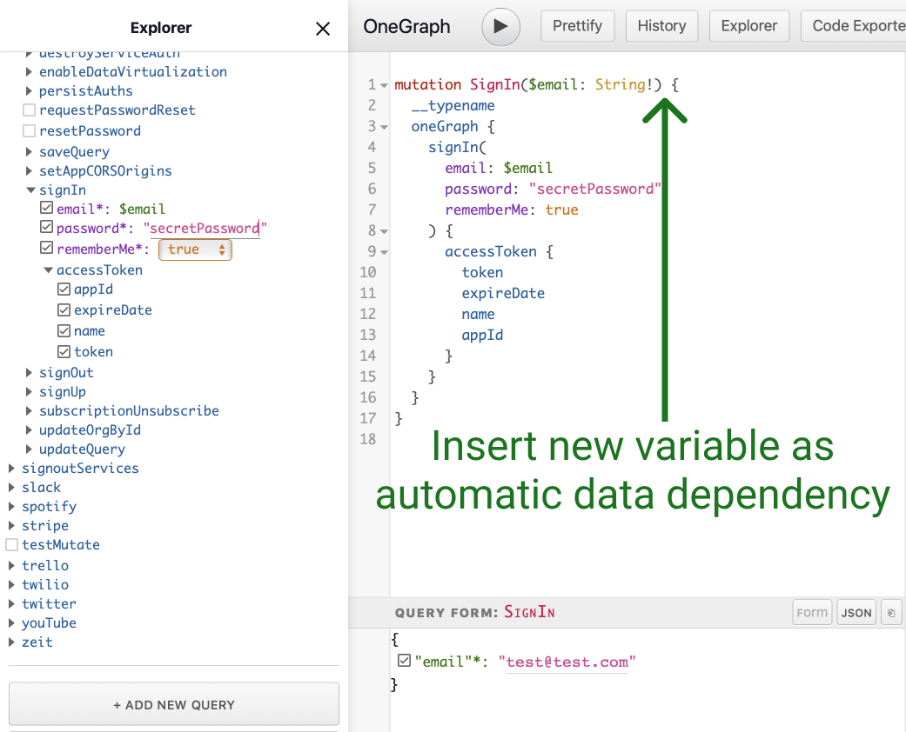
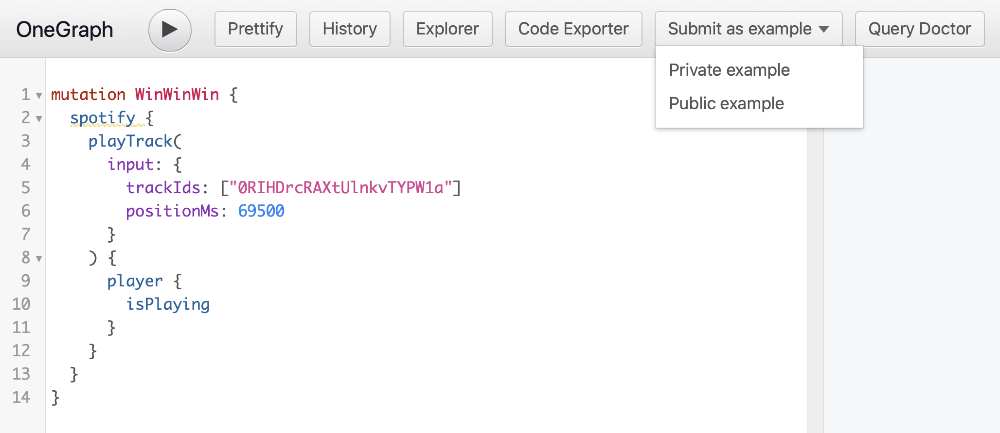
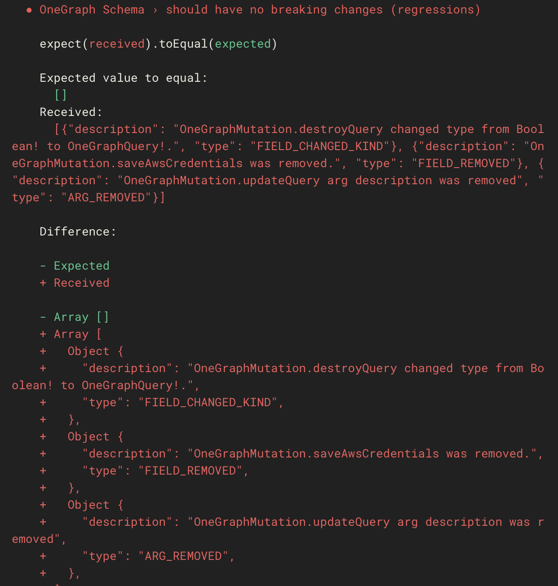

Accelerating API Adoption through developer happiness with GraphQL
Table of Contents
- GraphQL Tooling, today and tomorrow
- Or, "Accelerating API adoption through developer happiness with GraphQL"
- Who am I?
- Today
- Let's start!
- Why do we care?
- APIs are rarely known for sparking joy
- Perception of our API's adoption
- Three metrics for dev happiness
- How does GraphQL help?
- Pontificating about the future
- Virtuous-data cycle
- Deep Analytics: What can we do?
- Summary
- My offers
- Thank you!
- Misc
GraphQL Tooling, today and tomorrow
Or, "Accelerating API adoption through developer happiness with GraphQL"
Who am I?
- Sean Grove (@sgrove)
- Cofounder of (@OneGraphIO)
- VP Eng @ Payments company
- Background in Clojure(Script)/Reason/Rust, dev-tooling
Today
- Why do we care?
- Demoathon
- Pontificating about the future
Let's start!
- 1. Why do we care?
- 2. Demoathon
- 3. Pontificating about the future
Why do we care?
Two Points to keep in mind when talking about api adoption:
- Content is king
- Competition is fierce (not always from other APIs)
Content is king
First and foremost, the primary attraction of your API:
- Its data
- Its effects
"How do you help me achieve my business goal?"
Competition is fierce
- Engineering resources are always stretched
At any given time, 20+% of an API-based company's deal-flow is delayed for 6-8 months on engineering resources to get over integration challenges
"The business lead was about to buy, but realized they don't have engineering resources."
Two components
- Engineering resource constraint
Reflects amount of energy required to complete a task
- Developer happiness
Reflects amount of intrinsic energy available to complete a task
APIs are rarely known for sparking joy
- Lack of empathy (broken feedback loop)
- Limited resources for design/documentation/testing/tooling, etc.
Setting the scene…
Perception of our API's adoption
Reality of our API's adoption curve


"Though I walk through the valley of the shadow of auth…"

[Developer PSA]


Three metrics for dev happiness
Evaluate your API with the following criteria:
- Time to initial success (Success ASAP)
- Intensity of success (Biggest "wow" moments possible)
- Interval between subsequent success states (make success frequent)
Criteria => Maxims:
- Deliver quickest initial success
- Maximize "wow" factor
- Make success frequent
How does GraphQL help?
- GraphQL is inherently machine-readable (at multiple levels!)
- The tooling possible is intensely powerful
- A positive feedback loop
GraphQL Help: Demoathon
1. Why do we care?- 2. Demoathon
- 3. Pontificating about the future
GraphiQL - Auto-complete APIs!
GraphiQL Explorer
GraphiQL Code Exporter
query npm($package: String!) { npm { package(name: $package) { name downloads { lastMonth { count } } } } } query rss($url: String!) { rss { rss2Feed(url: $url) { title items { title pubDate guid { data permalink } enclosure { url length mime } content comments author } } } }
Next level: Auto-parameterize existing queries



GraphiQL Smart Forms
Compare to existing fragmented experiences:
- Documentation is often "inert"
- Examples aren't generalizable
- Initial experimentation isn't reusable in code
Who can traverse graphs?
- Humans
- Computers
Who's generally better?
Computers.
[GraphiQL Explorer Search Demo]
Multi-APIs
Hasura: Instant Realtime GraphQL on Postgres
Like Firebase++, but:
- On Postgres
- Standard GraphQL
- Open-source
[Automatically combining APIs Demo]
- Remote schema integration
- "Remote-service joins"
- Compare:
- Stripe-as-a-library
- Stripe-as-an-introspectable-graph
Auto-complete in editor
[vscode example]
GraphQL goes everywhere
Developers are not the only ones building things.
- Largest programming platform in the world?
- Excel.
[Excel demo]
- Sales VP, CFO, etc.
- "I need the projected revenue for Q4 from Salesforce"
- Managers: "I need a list of new users for the past 30 days"
GraphQL as async server-to-server events: Webhook delivery
Conquering Auth
Auth is difficult, and deeply unpleasant.
Build it into your API.
[Auto "Log in to <X>" example]
Progressive Auth
Progressive auth is the right thing to do.
It's also even more unpleasant!
Build it into your API.
type Company { id: String! name: String! createdAt: DateTime! accountBalance: Int @permissions(scopes: ["account:read"]) }
{ "errors": [ { "message": "Missing scope for accountBalance. Please grant additional permissions.", "path": [ "company" "accountBalance" ], "extensions": { "type": "auth/insufficient-auth", "requiredScope": "account:read", } } ], "data": { "company": { "id": "hZd773dvb" "name": "Globodex, Inc." } } }
Implementing auth in GraphQL?
"How do I secure my GraphQL server?"
AuthGuardian
Auth[n/z]
Authentication: Who are you?
Authorization: What are you allowed to do?
Authorization often is based on facts about your:
- What GitHub organization do you belong to?
- Do you have a (verified) email that belongs to the company?
- Are you the owner of playlist
X? - Have you ever committed to GitHub repo
Y?
What if we know how to find those facts, and process the predicates?
[AuthGuardian demo]
Living, responding, accurate API Docs
- Problem 1: Docs lie
- "Lies, damn lies, and API documentation"

- Connect a GitHub repo
- Scan all
.mdfiles - Verify all
graphqlcodeblocks against new schema
- Problem 2: Docs live over there

- Problem 3: Docs are dead
Analytics!
- "For the new users who signed up two weeks ago, what fields have they been accessing?"
- Humans classify unrecognized new use-cases
- Insert into documentation as annotated example
- Sort ranking based on trends in new users
- Potentially even per client-group via tagging clients
[GraphQL Codex Demo]
- Generate fast, SEO-able site
- Embed examples
- Check examples against schema on any change
- Provide automated changelog [like https://developer.github.com/v4/changelog/]
Persisted queries
Persisted queries register a query/mutation/subscription outside of normal app flow, usually a as build or manual step.
Persisted queries store the query as-is, and return a doc_id to be used inside of the app.
Allows the developer to explore and code freely, while locking down the production version.
- Prevent DoS attacks
- Enforce privacy and permissions
- Caching becomes trivial!
doc_id~+~auth_token_hash
Persisted queries + metadata…?
And, you can attach metadata.
Like auth.
Securely.
Persisted query demo 1
[Persisted query auth demo]
mutation SayHiToJesse($body: String!) { __typename google { gmail { sendMessage( data: { subject: "Sorry about this..." to: "jesse+graphcms+is+amazing@graphcms.com" body: $body } ) { message { id snippet } } } } }
Persisted query example app
OneGraph Changelog, lightweight GitHub-issue based blogging
- Includes posts
- Authenticated comments (with GitHub)
- Reactions
- Secure
- Incredibly optimized (SEO bonus points!)
[Persisted query real-world OSS example]
Pontificating about the future
1. Why do we care?2. Demoathon- 3. Pontificating about the future
Virtuous-data cycle

Deep Analytics: What can we do?
Iterative API design
Drive API adoption and innovation through inherent loop
Auto-classify fields for mocking use for mocking to help users without accounts
What's better than auto-auth?
No auth!

- First/Last/Full name
- Language distribution
- Address, Zip Code, Country
- URI
GraphQL Muse: sean@onegraph.com
GraphQL Cortex: sean@onegraph.com [Process orchestration demo with Google Voice]
mutation CopyTemplateRepo($name: String!, $ownerId: String!) { gitHub { cloneTemplateRepository( input: { repositoryId: "MDEwOlJlcG9zaXRvcnkyMTU0MjUxNjY=" visibility: PUBLIC ownerId: $ownerId name: $name } ) { repository { databaseId id nameWithLogin } } } } mutation CreateNetlifyDeployKey { netlify { makeRestCall { post(path: "/api/v1/deploy_keys") { jsonBody } } } } mutation AddDeployKeyToRepo($path: String!, $key: String!, $repoId: Int!) { gitHub { makeRestCall { post( path: $path # "/repos/dwwoelfel/netlify-test/keys" jsonBody: { id: $repoId key: $key title: "Netlify" } ) { jsonBody } } } } mutation CreateNetlifySite($siteName: String!, $repo: String!, $cmd: String!, $deployKeyId: String!) { netlify { makeRestCall { post( path: "/api/v1/sites" jsonBody: { name: $siteName repo: { provider: "github" id: 215425232 repo: $repo private: false branch: "master" cmd: $cmd # "sed -i 's/{site-name}/Macha Scoot/g' index.html" dir: "/" deploy_key_id: $deployKeyId } } ) { jsonBody } } } } mutation DeployNetlifySite($path: String!) { netlify { makeRestCall { post( path: $path #"/api/v1/sites/8c47014f-7074-4afb-820c-758e1d105e76/deploys" ) { jsonBody } } } }
GraphQL Cortex - orchestrate processes with GraphQL
sean@onegraph.com
Deep performance monitoring
- Performance/timing
- Error rates
- Audit-logs
- Total requests, bytes
… per field
Prevent breaking schema
- Deprecate old fields
- Identify specific clients who have accessed in the past
- Reach out to work on migration
- Show potential impact for failed migration (you've accessed these fields 10,000 in the past 30 days)
- Write query transformers to update client queries automatically
- Compare to REST: small tweaks indiscriminately affect all clients OR fork the world

Only one schema? :(
- Never break your API
- developers are sad.
- Beautiful, iterative API
- clients are sad.
Solution?
Look to Stripe!
Migration strategy!
GDPR, COPPA, HIPAA, PII
Combine client+field-level access with server-awareness of data sensitivity:
type User @ GDPR { id: String! name: String! birthdate: DateTime! @PII lastMedicalAppointment: DateTime @HIPAA socialSecurityNumber: String @PII }
- Automate permissions + privilege
- Track data exposure
Getting over the hurdle: Providers
- Analyze current network traffic
- Track "novelty" over time
- Derive actual API contract
- Authentication
- Pagination
- Relationships
- Types
- Generate GraphQL
…
- Self-contained binary
- Runs next to your webserver
- OSS
- On-premise
Appiderv: sean@onegraph.com
Getting over the hurdle: Users
[GraphQL Doctor sketch]
Summary
GraphQL itself offers substantial benefits out of the box.
The tooling today and tomorrow take developer happiness to the next level:
- For API providers
- For data-infrastructure managers
- For client-side developers
- And even for non-traditional devs: CFOs, VP Sales, Managers, Data-scientists, etc.
Why do we care?
- Ultimately the data and effects of your API are king - focus on that exclusively.
- But if you want your api to adopted in 2019, it must plug into next-level tooling:
- Familiar
- Exploration
- Documentation
- Code generation
- Client migration
- Analytics-lifecycle
- Pick standards that can give you as much of the above in an evolve-able way out of the box
- Designing apis still involves humans, but checking for consistency can be automated
- Content is king
- Competition is fierce
A word of caution:
- This is a 'wow' moment now.
- ….In a few years, it will simply be table-stakes.
- OneGraph tooling has started to spread and become standard!
- GitHub
- Gatsby
- Shopify
- Wordpress
- and on and on and on….
- How is your API going to fit into that world?
Adopt GraphQL & focus on #1
My offers
The GraphQL Book
5 copies of the new GraphQL book by our friends @MoonHighway, the premier GraphQL training group:
Tweet your best GraphQL questions (@OneGraphIO)
- GraphQL adoption
- Tooling possibilities
- Etc.
GraphQL, APIs, Dev-Tooling & Coffee
Developer happiness for your company
Want this tooling for your api and for your developers?
We can make it happen for you, public or on-premise.
Thank you!
- Sean Grove (@sgrove)
- Cofounder of (@OneGraphIO)

Misc
Overview
Client-side DX
Meta-API
Maintainers
Demos
- GraphiQL autocomplete
- Explorer
- Smart forms
- Exporter - figure out trello api?
- Excel
- GraphQL goes everywhere - even into Excel!
- Multi-APIs
- Automatic progressive authorization
- Hasura DB-access
- We've seen internal devs who - when they're so frustrated with an inscrutable api - stand up a hasura instance to build and prototype instead
- Hasura remote-joins
- Draftbit
- npm (salesforce) api redesign
- in-editor autocomplete
- Breaking schema changes
- GraphQL Pipelines
- Webhooks
- Generating JWT with GraphQL for authorization and authentication
Ideas
- Inferring API design from traffic
- Generate GraphQL Layer
- API analytics
- "Living API Docs" - can even be generated per client-group ("Fintech devs want to see these cases first", "startups want these cases first") if you tag the clients and see what fields they query in common
- Migrating existing clients (affects api maintainers)
- Auto-classify fields and use for mocking to help users without accounts
CTAs
- Ask me out for coffee
- Best 5 tweets get GraphQL book
- Waitlist for products
- GraphQL Pipelines
- Analytics classifier/mocking
- API inferrer
- Want this tooling for your api, for your developers? We can make it happen for you, public or internal
"This is a 'wow' moment now. It won't be in a few years - it'll be table-stakes. How is your API going to fit into that world?" "The developer has remained in a state of constant success" "If you give your developers super-powers, they'll love you"